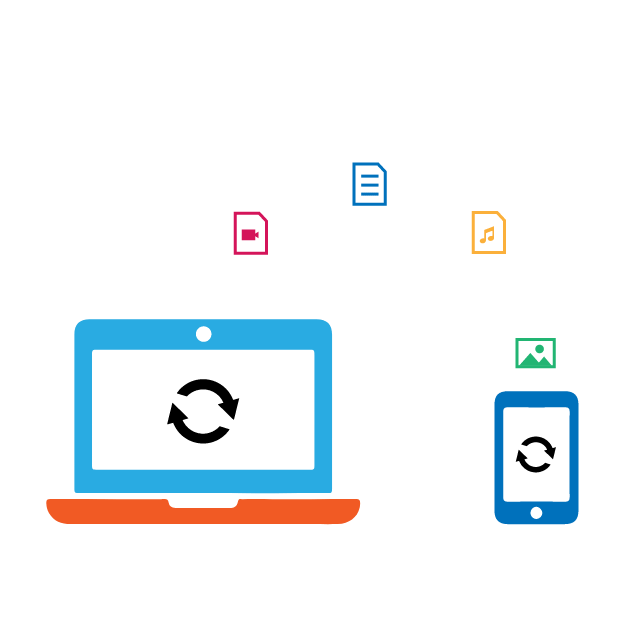

Migrate an Existing App to PWA
PWAs provide the advantages of native apps and the web, and they provide fast user response even on slow or hindered networks. With stability and the advantages of native apps, migrating existing websites to PWAs brings a better experience to your users.